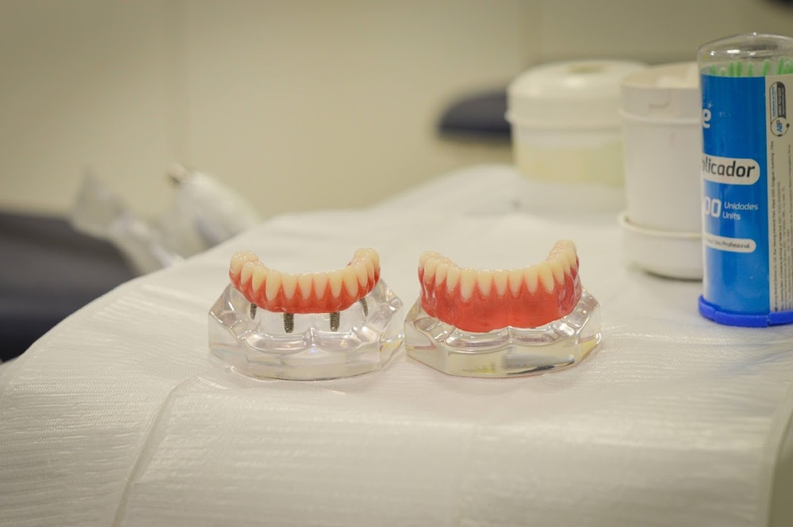
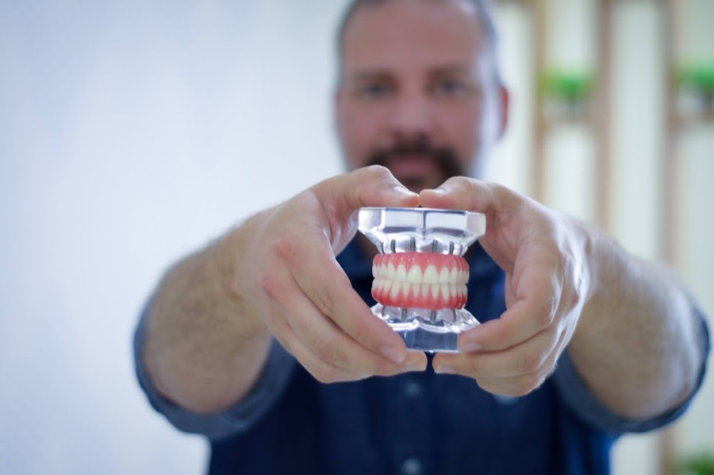
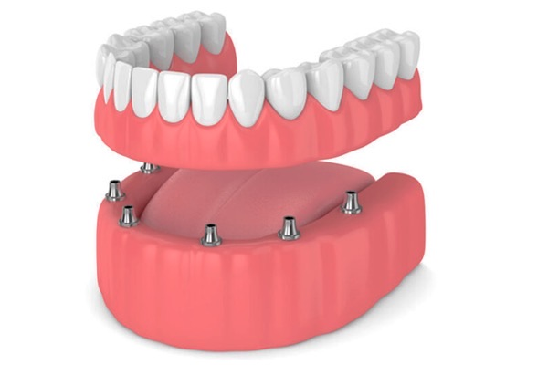
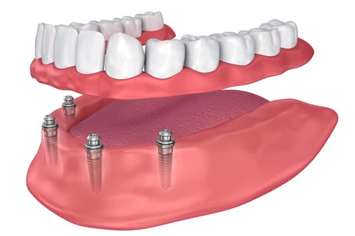
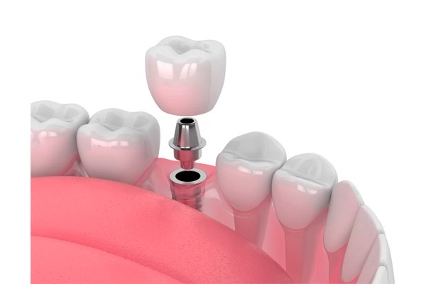
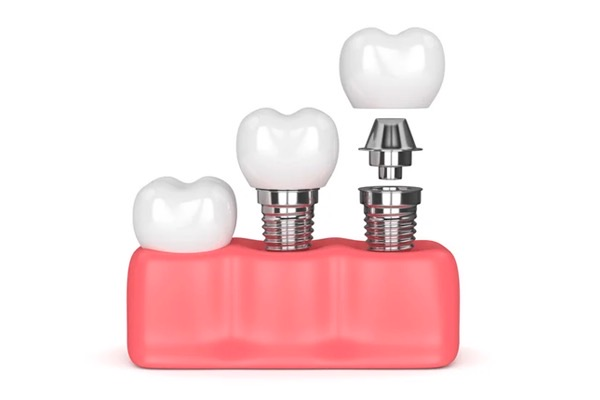
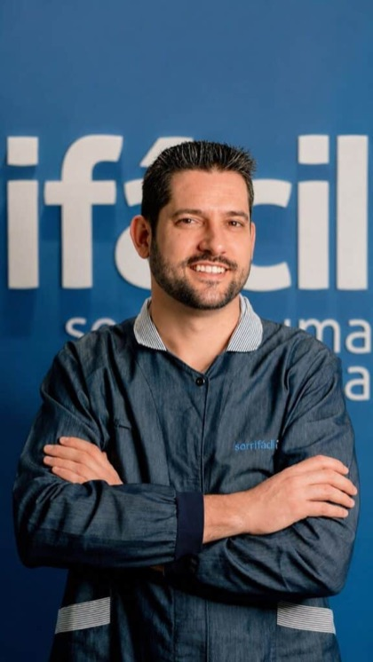

Volte a morder pão francês. Com dentes fixos, não com dentadura.
A prótese protocolo devolve a arcada inteira apoiada em 6 implantes em cima e 4 embaixo. Dente fixo, céu da boca livre e mastigação de verdade, aqui em Cambé.
Esta caixa existe só no protótipo. No ar, o envio abre o WhatsApp da unidade direto, com a mensagem pronta e a origem real da campanha.
Depois que você enviar
A gente não deixa você esperando
1
Resposta em minutos, não em diasAssim que sua mensagem chega, alguém da equipe fala com você. Se preferir, a gente liga: é mais rápido resolver a agenda por telefone.
2
Se você não responder na hora, a gente voltaVocê já adiou isso tempo demais. Não vamos deixar a sua mensagem se perder no meio da correria, e vamos procurar você até conseguir marcar.
3
Na consulta, o raio-x sai na horaVocê vê a imagem da sua boca na tela, conversa com o dentista e sai sabendo exatamente o que dá para fazer no seu caso.
4
Leve seus exames e a lista de remédiosSe você toma medicação contínua, tem diabetes ou pressão alta, isso ajuda o dentista a planejar melhor. Se não tiver em mãos, vá assim mesmo.
Implantes dentários em Cambé
Os implantes são para quem quer…
✓A autoestima de volta
✓Conforto e segurança para sorrir e falar
✓Resolver os problemas com a dentadura ou a ponte móvel
✓O sorriso devolvido em 7 dias
✓Voltar a sentir o sabor dos alimentos e a confiança na mastigação
✓Comer o que gosta sem se preocupar
O que é a prótese protocolo
Toda a arcada em cima de poucos implantes
Não é um implante para cada dente. A prótese é uma peça única, fixada sobre implantes que se integram ao osso, normalmente seis na arcada de cima e quatro na de baixo.
É por isso que ela não sai do lugar, não cobre o céu da boca e permite morder o que a dentadura não deixa.
Diagrama ilustrativo. O número e a posição dos implantes são definidos no raio-x da avaliação, caso a caso.

A peça de perto, com os implantes aparecendo por baixo

O modelo que o dentista mostra na avaliação

ilustraçãoA prótese se apoia nos implantes, não na gengiva

ilustraçãoComo a peça encaixa nos quatro implantes de baixo

ilustraçãoQuando falta um dente só, o implante é individual

ilustraçãoAs três partes: o implante, o pilar e a coroa
A pergunta que todo mundo faz
Qual a diferença entre dentadura e prótese protocolo?
A dentadura apoia na gengiva e cobre o céu da boca. O protocolo é fixado sobre implantes que ficam dentro do osso. Vendo de cima, a diferença fica óbvia.
Dentadura
Vista de cima, arcada superior
A placa de acrílico precisa cobrir o palato inteiro para criar sucção e não cair. É o que faz o gosto da comida sumir, e ainda assim ela se solta ao falar e ao rir.
Prótese protocolo
Vista de cima, arcada superior
Só a faixa dos dentes. O palato fica descoberto, então você volta a sentir sabor e temperatura, e nada se solta, porque a peça fica presa aos implantes.
DentaduraPrótese protocolo
Mastigação
DentaduraEvita carne, maçã, pão com casca
ProtocoloMorde de tudo, inclusive carne e espiga
Céu da boca
DentaduraCoberto pela placa, o gosto da comida some
ProtocoloLivre. Você volta a sentir sabor e temperatura
Fixação
DentaduraSolta ao falar e rir; depende de pomada
ProtocoloFixa. Só o dentista retira
Osso
DentaduraO osso continua encolhendo com os anos
ProtocoloO implante estimula o osso e freia a reabsorção
Rosto
DentaduraA boca vai "afundando" com o tempo
ProtocoloSustenta o lábio e o contorno do rosto
Implantes
DentaduraNenhum, e nenhuma estabilidade
ProtocoloGeralmente 6 em cima e 4 embaixo
Esquema de como fica por dentro da mandíbula. Ilustração didática, não representa medidas clínicas.
O que quase ninguém explica
Por que a boca vai "afundando" com a dentadura
O osso da mandíbula só se mantém quando recebe força de mastigação. A raiz do dente é o que transmite essa força. Sem raiz, o corpo entende que aquele osso não é mais necessário e ele vai diminuindo ano após ano.
A dentadura apoia por cima e não transmite nada, pelo contrário, a pressão acelera esse processo. É por isso que uma dentadura que servia há cinco anos hoje solta, e é por isso que o lábio vai perdendo sustentação e o rosto parece envelhecer mais rápido.
O implante ocupa o lugar da raiz. Ele transmite a força mastigatória de volta para o osso e freia esse processo.
Sem surpresa no meio do caminho
Como funciona, do primeiro contato ao dente fixo
Avaliação e raio-x
O dentista examina, tira o panorâmico e mede seu osso ali mesmo. Você sai sabendo quantos implantes precisa e se há necessidade de enxerto.
Plano de tratamento
O dentista define com você quantos implantes serão necessários e onde cada um vai ficar. Você aprova o plano por escrito antes de marcar o procedimento.
O procedimento e a prótese
Os implantes são colocados com anestesia local (e sedação, se indicado). Em carga imediata, você sai da clínica com a prótese fixa no lugar.
Sorriso de volta em 7 dias, quando o caso permite
Casos da unidade de Cambé
Antes e depois, separados por tipo de caso
Cada pessoa chega numa situação diferente. Procure abaixo o caso que mais se parece com o seu.
Antes
Depois
Perdeu alguns dentes
Implantes colocados só nos espaços vazios, sem mexer nos dentes que ainda estão bons.
Antes
Depois
Perdeu a arcada de cima
Prótese protocolo na arcada de cima, apoiada em seis implantes, com o céu da boca livre.
Antes
Depois
Usava dentadura
Protocolo nas duas arcadas. A diferença aparece até no contorno do rosto e no jeito de falar.
Resultados variam conforme o caso clínico. Fotos publicadas com autorização por escrito dos pacientes.
A pergunta que quase ninguém faz em voz alta
Quanto vai custar o meu caso?
Não existe valor de tabela para prótese protocolo, porque não existem duas bocas iguais. O que define o seu orçamento é o que aparece no raio-x: quanto osso você tem, quantos implantes o seu caso pede e se há ou não necessidade de enxerto.
Por isso o valor é apresentado na avaliação, com o exame na tela e o dentista explicando cada item. Você recebe tudo por escrito, com cada item explicado, e leva o documento com você.
Por norma do Conselho Federal de Odontologia, clínicas não podem divulgar preços nem formas de pagamento em publicidade. Na consulta, o dentista apresenta todas as opções disponíveis para você.
Como o seu orçamento é montado
Sem tabela pronta, porque não existe caso igual a outro.
O raio-x panorâmico define tudo. Quanto osso você tem, como é a estrutura da sua arcada e quais dentes ainda dá para manter.
Número de implantes. Uma arcada com osso bom precisa de menos implantes que uma com reabsorção avançada.
Necessidade de enxerto. Quando falta osso, entra uma etapa a mais, e isso muda prazo e valor.
Material da prótese. Existem opções diferentes, e o dentista apresenta cada uma com suas vantagens.
Você recebe por escrito. Plano de tratamento e orçamento fechado, no papel, com o nome do dentista responsável pelo seu caso.
Atua como implantodontista, com um atendimento cuidadoso e moderno, focado na saúde, no bem-estar e na confiança dos pacientes. Valoriza a precisão em cada tratamento.
Natural de São Bernardo do Campo, SP
Fora da clínica um bom churrasco

Dr. Marcos Vinícius Wiira Sá Freire
CRO/PR 28.140 · Clínico geral e avaliador
É quem faz a sua avaliação. Valoriza a escuta, o diagnóstico preciso e um plano de tratamento construído com segurança e confiança.
Natural de Marília, SP
Fora da clínica churrasco com a família e os amigos
Essa é a pergunta número 1 e merece uma resposta honesta em vez de "é tranquilo". Durante o procedimento você não sente dor: é anestesia local (e sedação consciente, se indicado no seu caso).
Eu já perdi muito osso. Ainda dá pra fazer?
Na maioria dos casos sim. Quando o osso não é suficiente existem caminhos: enxerto ósseo, implantes mais curtos ou técnicas que aproveitam áreas de osso mais denso. O raio-x panorâmico da avaliação responde isso, e é exatamente essa dúvida que faz muita gente desistir sem nem perguntar.
Por que o site não mostra o valor do tratamento?
Por duas razões. A primeira é legal: a Resolução CFO 196/2019 proíbe clínicas odontológicas de divulgar preços, formas de pagamento, descontos ou promoções em publicidade. A segunda é clínica: não existe valor de tabela para protocolo, porque ele depende de quantos implantes o seu caso pede e de haver ou não necessidade de enxerto, coisas que só o raio-x mostra. Na avaliação você recebe o orçamento fechado por escrito, para levar para casa.
Quanto tempo até eu ter dente fixo?
Quando o caso permite carga imediata, o sorriso é devolvido em 7 dias. A prótese definitiva vem depois da cicatrização, em torno de 0 meses. O prazo exato do seu caso o dentista confirma na avaliação.
Sou diabético / hipertenso / fumo. Posso fazer?
Na maior parte dos casos sim, com acompanhamento. Diabetes controlada e pressão controlada não impedem o implante; o que atrapalha é o descontrole. Fumar reduz as chances de sucesso do implante e o dentista vai conversar sobre isso abertamente na avaliação. Traga seus exames recentes e a lista de medicamentos que você usa.
O que exatamente acontece na avaliação?
O dentista examina sua boca, tira o raio-x panorâmico e analisa a imagem com você na tela. A partir disso ele monta o plano de tratamento: quantos implantes o seu caso pede, se há necessidade de enxerto e em quanto tempo dá para fazer. Você sai da consulta com esse plano e o orçamento por escrito, com o nome do dentista responsável.
Preciso tirar os dentes que ainda tenho?
Depende do estado deles. Dentes muito moles, inflamados ou com osso já bastante reduzido costumam ser removidos no mesmo dia. Dentes saudáveis são preservados sempre que possível, em muitos casos a solução é implante unitário, não protocolo. O raio-x é o que define.
Você já adiou tempo demais
Pare de adiar a transformação do seu sorriso
Faça como os milhares de brasileiros que já tiveram o sorriso devolvido em poucos dias. A agenda desta semana já está aberta.